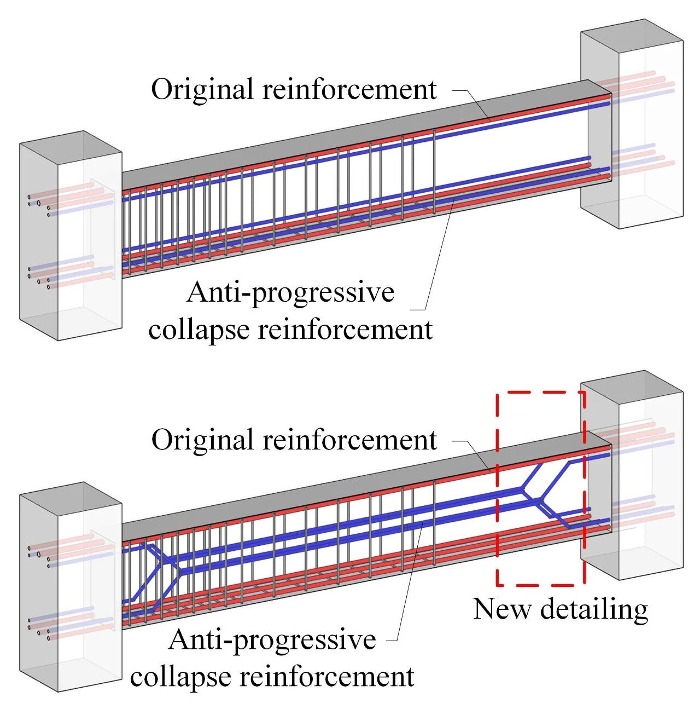

抗震&防连续倒塌：一种新型构造措施
1 研究背景
RC框架抗震及防连续倒塌一直以来在国内外都得到广泛重视，研究表明，RC框架在防连续倒塌和抗震设计方面有明显的差别，导致结构在防连续倒塌设计后，其抗震性能反而会受到影响，详细内容可以参见我们以前的工作（传送门：防连续倒塌设计会削弱结构的抗震能力么？是的）。

那么问题来了。。。
我们该怎么方便、快捷又经济地解决问题呢？
2
研究内容
为了解决上述问题，我们提出了一种新型的构造措施，如图1所示，通过改变RC框架防连续倒塌设计后新增配筋的布置方式（图中蓝色钢筋），希望能同时满足抗震设计和防连续倒塌设计的要求。

图1. 新型地震和连续倒塌综合防御构造措施
（A.防连续倒塌设计后配筋；B.新型构造配筋）
方便、快捷&经济？
方便：仅需修改结构中原有的钢筋布置；
快捷：弯一下就好了嘛；
经济：基本不增加额外的钢筋用量；
为什么要这样弯钢筋？
上述构造的设计原理如图2所示，通过设计新增防连续倒塌配筋弯起的位置，希望实现：（1）不改变梁内通常布置的纵筋配筋率，维持结构在悬链线阶段的连续倒塌承载力（2）通过改变RC框架梁中的配筋布置，人为地使框架梁中出现抗弯强度的变化区域，在地震荷载下，使塑性铰得以出现在框架梁上的削弱截面处，从而保护梁柱节点区和框架柱。

图2. 新型构造措施设计原理
3
试验及数值验证
为了验证上述构造措施的抗震和防连续倒塌性能，本文开展了不同配筋的RC框架节点低周往复试验、子结构连续倒塌试验、以及不同结构的数值模拟工作，结果如下：
试验验证
➡ 抗震性能试验
不同框架节点的抗震试验结果如图3所示。结果表明，采用新型构造后，相较传统防连续倒塌设计后的框架而言，RC框架节点区的破坏大幅减轻，帮助结构在地震下实现“强柱弱梁”破坏。

图3. 不同框架试件抗震试验后节点区损伤情况
（A. S-RC6; B. S-RD1; C. S-ND）

小Tips：
RC6：6度设防RC框架；
RD1：RC6框架+防连续倒塌设计；
ND： RD1框架+新型构造；
S：抗震性能试验试件；
P：连续倒塌试验试件。
➡ 连续倒塌试验
不同框架连续倒塌试验结果如图4所示。采用新型构造措施后，新框架（ND）在悬链线阶段承载力与防连续倒塌设计后框架承载力（RD1）基本相当。

图4. 不同框架试件连续倒塌承载力-位移曲线对比
数值模拟
同样地，对不同结构开展整体结构地震和连续倒塌响应数值模拟工作，结果如图5~6所示。其中，图5为不同框架在相同地震动集合下的易损性曲线对比；图6为RC6框架和ND框架在拆除构件后的整体结构响应对比。结果表明，采用新型构造后，RC框架抗震整体结构抗震性能得到小幅提升，同时在拆除构件工况下，结构满足防连续倒塌的设计要求。

图5. 不同框架抗震性能对比

图6. 不同框架拆除构件后连续倒塌响应对比
（A. RC6; B. ND）
4
总结
本文提出了一种RC框架地震和连续倒塌综合防御构造措施，通过改变防连续倒塌设计后框架梁内新增配筋的布置方式，达到在满足结构防连续倒塌设计要求同时改善框架的抗震性能，并结合试验研究和数值模拟验证了上述构造措施的实际表现。

林楷奇
---End---
相关研究
长按识别二维码，关注我们的科研动态